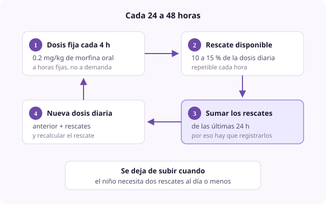

Ficha de síntoma
Dolor irruptivo y dosis de rescate
- Dominio
- Dolor
- Nivel
- Intermedio
- Edades
- Cualquier edad
Es la exacerbación transitoria de dolor que aparece sobre un dolor de fondo ya controlado. Se trata con una dosis de rescate, no subiendo la pauta fija, y su registro es la herramienta con la que se titula el opioide. Es el concepto que más veces se aplica mal en la práctica.
Por qué ocurre
Se distinguen tres tipos. El incidental, desencadenado por algo previsible como moverse, toser o una cura. El idiopático, que aparece sin causa identificable. Y el de final de dosis, que ocurre justo antes de la siguiente toma y que en realidad no es dolor irruptivo sino una pauta insuficiente o un intervalo demasiado largo.
Causas
- Movilización, higiene, cambio de pañal, transferencias
- Curas de heridas y procedimientos
- Tos, vómito, deposición
- Progresión de la enfermedad, cuando la frecuencia aumenta de forma sostenida
- Pauta de fondo insuficiente, que se manifiesta como dolor de final de dosis
Qué evaluar
- Registrar cada episodio: Hora, intensidad, desencadenante, dosis administrada y respuesta
- Contar cuántos rescates necesita al día: Tres o más de forma mantenida significa que la dosis de fondo se ha quedado corta
- Identificar si son siempre a la misma hora, justo antes de la toma siguiente, porque eso indica dolor de final de dosis y se corrige acortando el intervalo o subiendo la dosis fija
- Comprobar que la dosis de rescate está bien calculada: Del 10 al 15 por ciento de la dosis diaria total, no un porcentaje de la dosis por toma
- Comprobar que la familia sabe que puede usarla y que no está esperando permiso
Manejo no farmacológico
- Anticipar el rescate 30 minutos antes de una movilización o de una cura previsible, que es lo que más rendimiento da
- Reorganizar los cuidados para agrupar las manipulaciones y reducir su número
- Técnicas de distracción y de respiración durante el episodio
- Ajustar la técnica de movilización y usar sábana de traslado
Manejo farmacológico
- Morfina de liberación inmediata
- Del 10 al 15 por ciento de la dosis diaria total, VO, repetible cada hora. Rescate estándar por vía oral.
- Morfina subcutánea
- Del 10 al 15 por ciento de la dosis diaria total SC, repetible cada 20 a 30 minutos. Cuando no hay vía oral o se necesita rapidez.
- Fentanilo sublingual o nasal
- 1 a 2 microgramos/kg. Dolor irruptivo de instauración muy rápida, por su inicio en 5 a 10 minutos.
Cuándo escalar
Si el niño necesita más de cuatro rescates diarios pese a haber reajustado la pauta fija dos veces, o si la intensidad de los episodios no cede con el rescate, hay que replantear el mecanismo del dolor y consultar con un equipo especializado.
Qué decir a la familia
Esta dosis extra está pautada precisamente para esto y no le va a hacer daño. Pueden dársela sin llamar antes, y lo único que les pido es que apunten la hora, porque con esos apuntes ajustamos la dosis de fondo.
Qué evitar
- Calcular el rescate sobre la dosis por toma en lugar de sobre la dosis diaria total
- No recalcular el rescate al subir la pauta fija, que deja al niño con un rescate que se ha quedado corto
- Usar un opioide de liberación prolongada como rescate: Tarda horas en actuar
- Confundir el dolor de final de dosis con dolor irruptivo y rescatarlo en lugar de corregir la pauta
- Que la familia no use el rescate por miedo a la adicción o a hacer algo mal
Perla clínica
El rescate no es solo un tratamiento: Es el instrumento de medida. La suma de los rescates de las últimas 24 h es exactamente lo que hay que añadir a la dosis diaria para calcular la nueva pauta, y sin ese registro la titulación se convierte en adivinar.

rescate titulación irruptivo final de dosis registro